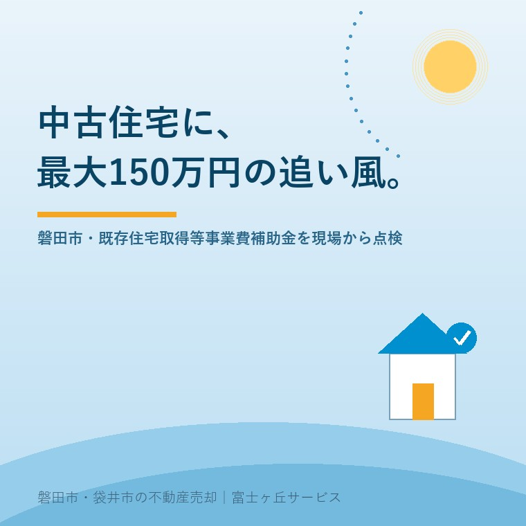

2026年7月24日｜カテゴリ：住まい・補助金・空き家活用

この記事の要点
Q. 磐田市で中古住宅を買うと補助金がもらえるって本当？
A. 本当です。若者世帯・子育て世帯が市内の中古住宅を購入・リフォームする場合、購入費の10分の1とリフォーム費の2分の1が補助され、市外からの転入なら上限150万円（市内転居等は100万円）です。ただし交付決定前の着工はNG、年度内完了、旧耐震住宅は耐震評点などの条件があり、物件選びと申請の順番がとても大切です。磐田市・袋井市では、介護施設の運営から不動産事業を始めた富士ヶ丘サービスのような地域密着の会社に、補助金の使える物件かどうかも含めて相談するという選択肢があります。
磐田市には、中古住宅（既存住宅）の購入やリフォームを後押しする「既存住宅取得等事業費補助金」という制度があります。市外からの転入なら最大150万円、市内での住み替えでも最大100万円と、住宅系の補助金としてはかなり手厚い部類です。空き家を増やさず、既にある家に若い世帯に住んでもらう──空き家対策と人口誘致を兼ねた、市の本気度がうかがえる制度と言えます。ただ、現場で買主さま・売主さまのお手伝いをしている立場から見ると、「知っていれば使えたのに」「順番を間違えて対象外に」という落とし穴もある制度です。今日は、この補助金を不動産屋の目で点検します。
まず骨組みを整理します（2026年7月24日時点、磐田市公式サイトより）。
| 項目 | 内容 |
|---|---|
| 対象世帯 | 若者世帯（世帯全員が39歳以下）／子育て世帯（中学生以下の子ども・胎児含む・が同居）。この2類型は住宅取得・建替え・リフォームが対象。その他の世帯はリフォームのみ対象 |
| 補助率 | 若者・子育て世帯：建物購入費の1/10＋リフォーム工事費の1/2。その他の世帯：リフォーム工事費の1/2（上限50万円） |
| 上限額 | 市外からの転入（世帯全員が1年以上市外在住）：150万円／市内転居等：100万円 |
| 主な要件 | 完了後10年間居住する見込み／入居者全員に市税の滞納がないこと／自治会に加入すること／市内に他の自己所有建物がないこと |
| 耐震 | 1981（昭和56）年5月31日以前の建築物は、耐震評点1.0以上（木造）等が必要 |
| 期間・予算 | 年度内（4月1日〜3月31日）に事業着手から完了まで行うこと。補助は予算の範囲内 |
たとえば市外にお住まいの子育て世帯が、磐田市内の800万円の中古住宅を買って500万円のリフォームをする場合、購入費の1/10（80万円）＋リフォーム費の1/2（250万円）＝計算上330万円ですが、上限の150万円が補助されるイメージです。中古住宅の価格帯を考えると、実質的に1〜2割の値引きに相当する大きな支援です。
この制度が一番効くのは、「中古を買って、自分たちの好みに直して住む」という買い方です。磐田市の中古住宅は、同じ立地の新築より数百万〜1千万円以上安く手に入ることが多く、そこに補助金と、購入とセットのリフォームを組み合わせると、新築では届かない立地・広さに手が届くことがあります。空き家になっていた家が市場に出てくるケースも多いので、買主にとっては選択肢が広がり、地域にとっては空き家が一軒減る。制度の狙いどおりの、いい循環だと感じます。
一方で、実務では次の点でつまずきやすいので注意が必要です。
この制度、実は実家や空き家を売る側にとっても追い風です。買主が補助金を使えるなら、その分だけ買える人の層が広がり、成約に近づきます。逆に言えば、売る側が次の準備をしておくと「補助金が使える物件」として選ばれやすくなります。
磐田市と袋井市は、子育て世帯の呼び込みで互いに競い合っている間柄です。袋井市には袋井市の制度体系があり要件も異なるため、袋井の物件をお考えの方は個別にご確認ください。いずれにせよ「既にある家に住んでもらう」方向へ行政の後押しが強まっているのは、空き家を抱えるご家族にとって前向きな変化です。
富士ヶ丘サービスは、磐田市・袋井市に特化した地域密着の不動産会社として、買う方には補助金の使える物件選びとスケジュール管理を、売る方には「選ばれる空き家」への整え方をお手伝いしています。介護施設の運営から始まった会社なので、親の施設入居で空いた実家を「子育て世帯へつなぐ」ご相談も、介護と不動産をひとつのテーブルで承ります。まずは売却前カルテ・実家じまい相談室からどうぞ。
ふじがおか実家カルテ｜「補助金が使える物件」かどうかの確認にも
建築年・名義・道路・耐震。売る前に、まず1冊に。
登記情報と固定資産税通知書から、建築年や名義など売却・補助金活用の前提条件を宅建士が机上で確認します。買い替え・住み替えのご相談もどうぞ。
本記事は2026年7月24日時点の磐田市公式サイトの情報をもとに作成しています。補助率・上限額・要件・受付状況は年度により変わることがあります。申請前に必ず磐田市の担当窓口へ最新の要綱をご確認ください。個別の適用可否の判断は市の審査によります。
磐田市・袋井市の実家じまい・相続空き家相談
固定資産税通知書だけでも相談できます
住所があいまいでも、通知書や写真から名義・道路・農地・残置物の確認順を整理します。カルテ申込またはLINEで状況を送ってください。
富士ヶ丘サービス株式会社／静岡県磐田市見付5789番地1／TEL:0538-31-3308／静岡県知事 (2) 第14083号／代表取締役・宅地建物取引士 大石 浩之